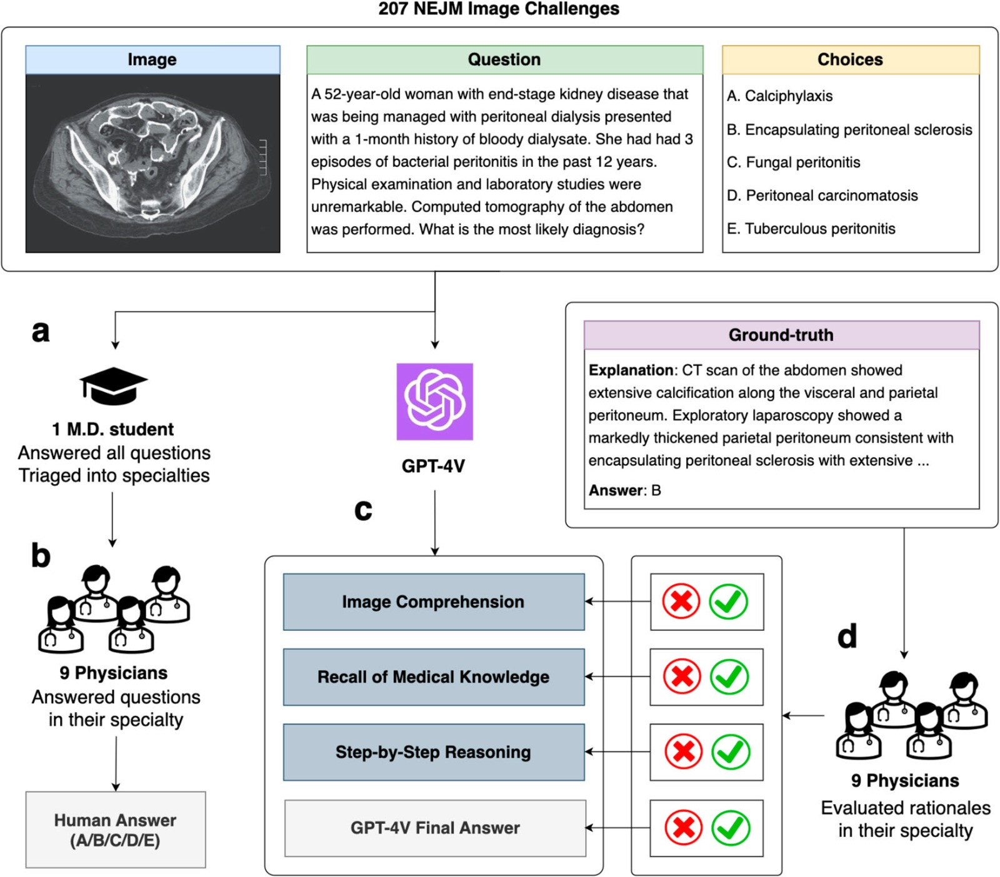
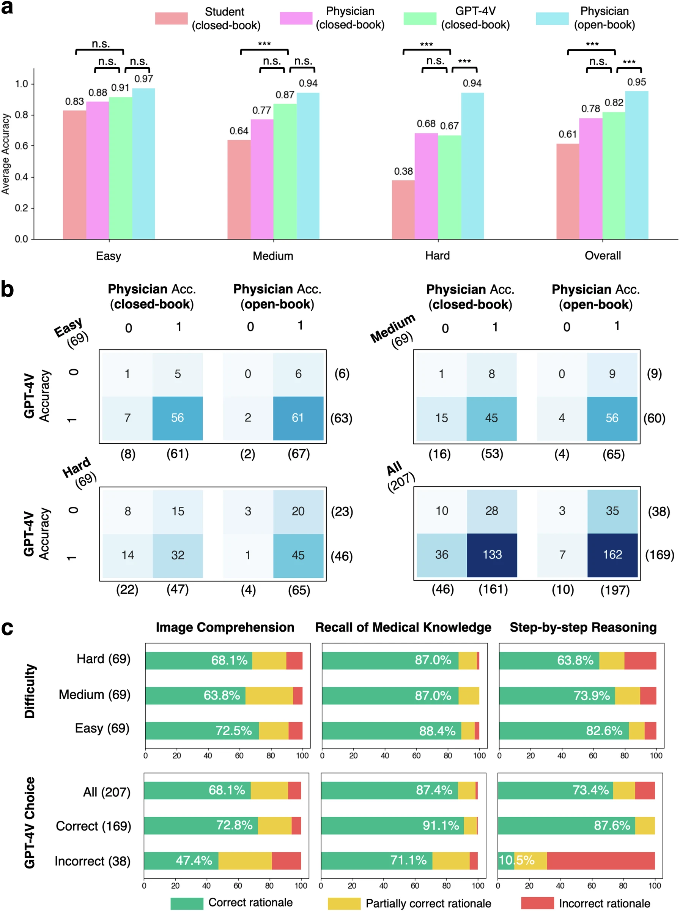

Resumen
El estudio presenta una evaluación exhaustiva del rendimiento de GPT-4 con visión (GPT-4V) en tareas médicas multimodales, centrándose en su capacidad para responder preguntas de opción múltiple relacionadas con imágenes médicas. Se utilizaron 207 preguntas del NEJM Image Challenge, que se clasificaron en tres niveles de dificultad: fácil, medio y difícil, basándose en la tasa de respuestas correctas de los usuarios del NEJM.
Los resultados muestran que, en un entorno de examen cerrado (sin acceso a herramientas externas), GPT-4V logró una precisión general del 81.6%, superando a un grupo de médicos que alcanzó un 77.8%. Sin embargo, esta diferencia no fue estadísticamente significativa. Además, el modelo mostró un rendimiento notable en comparación con un estudiante de medicina senior, quien obtuvo un 61.4% de precisión. En un entorno de examen abierto, los médicos humanos alcanzaron una precisión del 95.2%, lo que resalta su superioridad en situaciones donde pueden acceder a recursos externos.
A pesar de su alta precisión en las respuestas, el estudio reveló que GPT-4V a menudo presenta fallos en sus razonamientos. En particular, se encontró que el 35.5% de las veces que el modelo selecciona la respuesta correcta, sus justificaciones son incorrectas. Este problema es más pronunciado en la comprensión de imágenes, donde el modelo tuvo una tasa de error superior al 20%. En contraste, la recuperación de conocimientos médicos fue la capacidad más confiable del modelo.
El estudio concluye que, aunque GPT-4V muestra un rendimiento competitivo en términos de precisión de respuestas, es crucial realizar evaluaciones más profundas de sus razonamientos y capacidades antes de considerar su integración en la práctica clínica. Esto es especialmente importante dado que la precisión en las respuestas de opción múltiple no necesariamente refleja la competencia real del modelo en situaciones clínicas complejas.
Palabras Clave
- GPT-4V
- Inteligencia Artificial
- Medicina
- Evaluación
- Multimodal
Ideas Principales
- Precisión y Comparación: GPT-4V logra una precisión del 81.6% en tareas médicas, superando a médicos humanos que alcanzan un 77.8%, aunque esta diferencia no es significativa.
- Errores en Razonamiento: El modelo presenta fallos en su razonamiento, con un 35.5% de veces que selecciona respuestas correctas pero con justificaciones incorrectas.
- Importancia de la Supervisión Humana: Se enfatiza la necesidad de supervisión humana en la implementación de IA en medicina, dado que los errores pueden tener consecuencias graves.
Ficha Técnica
| Elemento | Detalles |
|---|---|
| Título: | Hidden flaws behind expert-level accuracy of multimodal GPT-4 vision in medicine |
| Fecha de publicación: | 24 de agosto de 2023 |
| Autores: | Qiao Jin, Fangyuan Chen, Yiliang Zhou, entre otros |
| Publicación: | npj Digital Medicine |
| DOI: | 10.1038/s41746-024-01185-7 |
Conclusiones
El estudio resalta que, aunque GPT-4V tiene un buen rendimiento en precisión, sus errores en razonamientos son preocupantes. Esto sugiere que no se debe confiar completamente en la IA para decisiones médicas sin una evaluación más profunda. En el contexto de la visión artificial y el reconocimiento visual basado en IA, es crucial asegurarse de que los modelos no solo sean precisos en sus respuestas, sino que también comprendan correctamente las imágenes y el contexto médico. La capacidad de interpretar correctamente las imágenes médicas es fundamental para diagnósticos precisos y tratamientos efectivos. Sin esta comprensión, se corre el riesgo de tomar decisiones erróneas que podrían afectar la salud del paciente.
Recursos
Flujo de trabajo GPT-4V
 Esta figura ilustra el flujo de trabajo de evaluación para GPT-4V utilizando 207 NEJM Image Challenges.
Resultados de la evaluación
 Resultados de la evaluación.